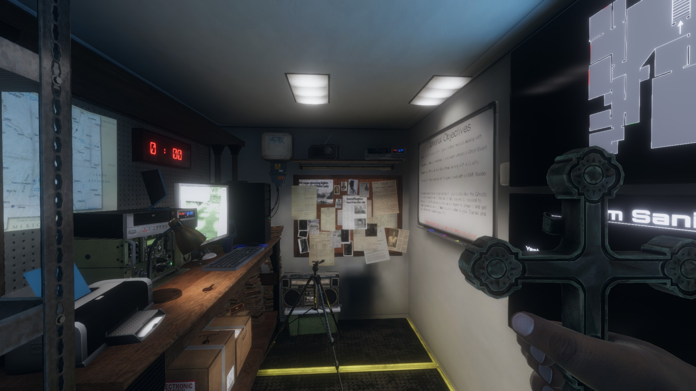
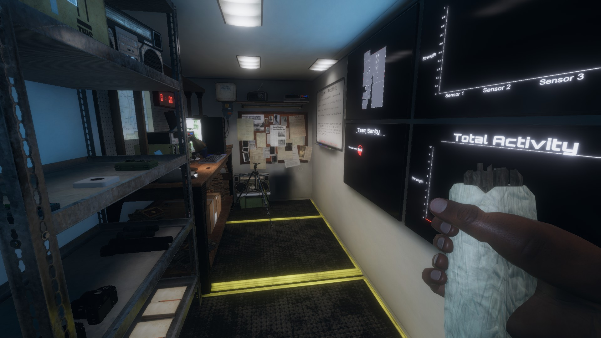
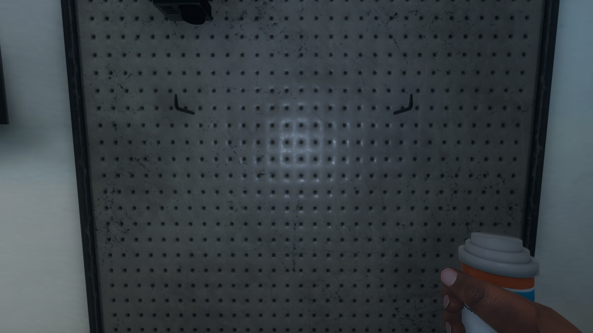

Attack Prevention
Ghosts don't like to be disturbed but that's a ghost hunters job. Since you're going to be disturbing ghosts by barging in to their home, and yelling at them and placing random things around them, they may want to scare and kill you. Below are going to be some items that will keep you alive so you can discturb other ghosts.
- Crucifix 
- This item is extremely useful when it comes to saving your life. The crucifx prevents the ghost from entering hunting mode in a 4 meter radius. You're not 100% immune but if you place it in the ghosts room, you should be just fine. Be wary though, if the ghost likes to throw or move things, your crucifix is no exception. The crucifix is also very innefective if you don't know where the room is or if the ghost wanders. It is also important to note that the crucifix will not save you once a hunt has already begun.
- Smudge Sticks 
- Smudge sticks are a great way to calm the ghost down. When lit in the room with the ghost they will bring down its activity for awhile. You can throw them on the ground after lighting it and note that to light one of these, you need a lighter in your other inventory slot. Although you may not always resort to this method, this is a common side objective that can get you extra money.
- Sanity Pills 
- Ghosts only begin to attack when your sanity is low. If you find yourself sitting dangerously low then taking some sanity pills will boost it all the way back up. This item is near over-powered and will stave off ghost attacks for as long as you can keep your sanity high.
- Salt
- In the chance you are dealing with a wraith, placing salt in the room will prevent it from attacking.
These items are not fullproof but they will keep you alive a bit loger.